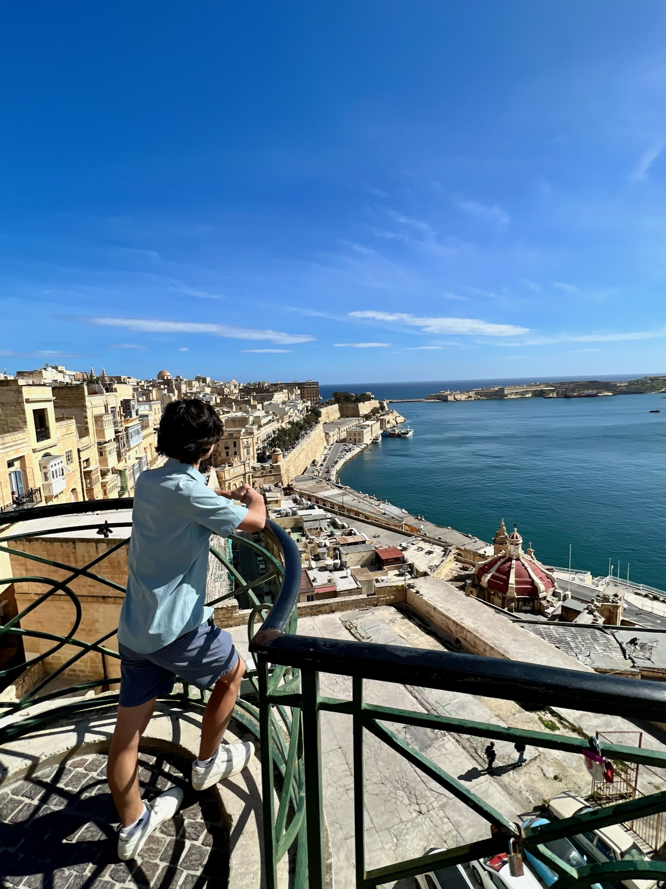
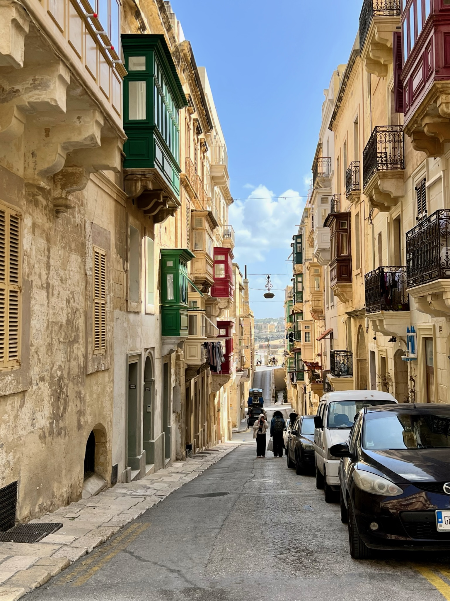
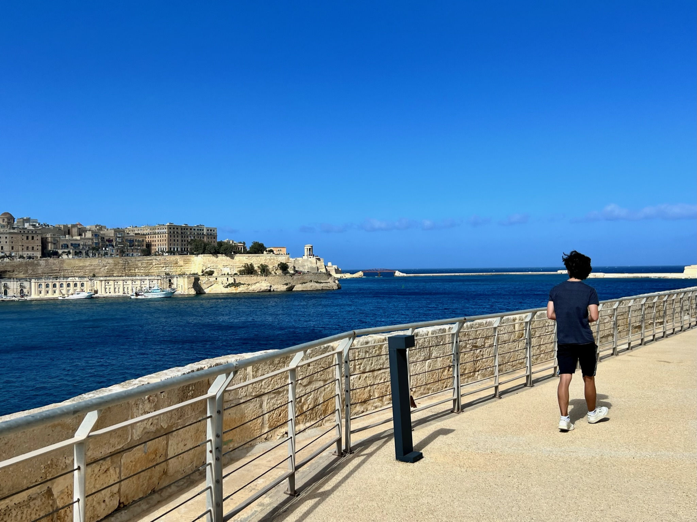
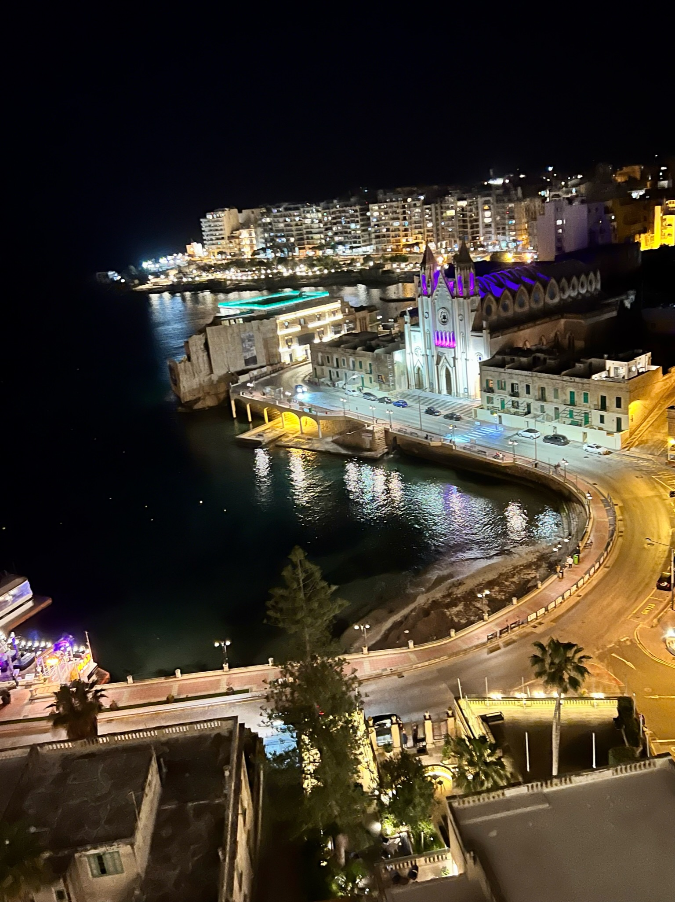
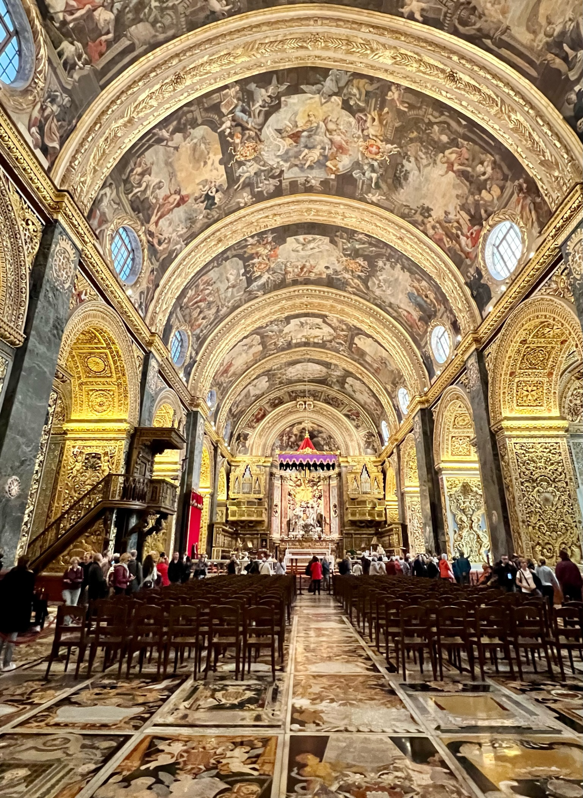
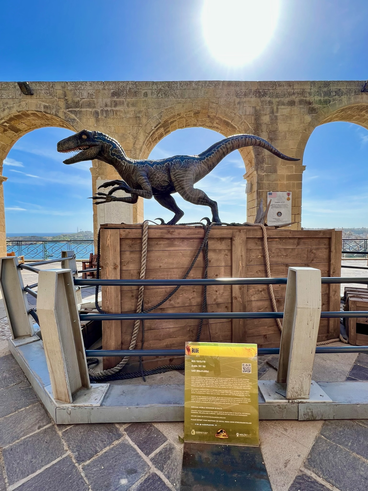
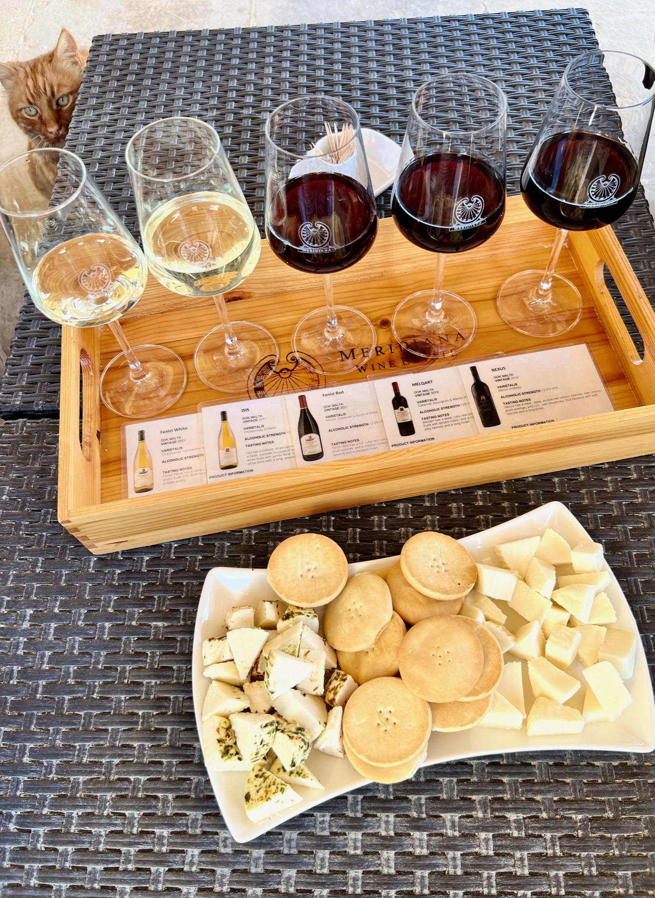
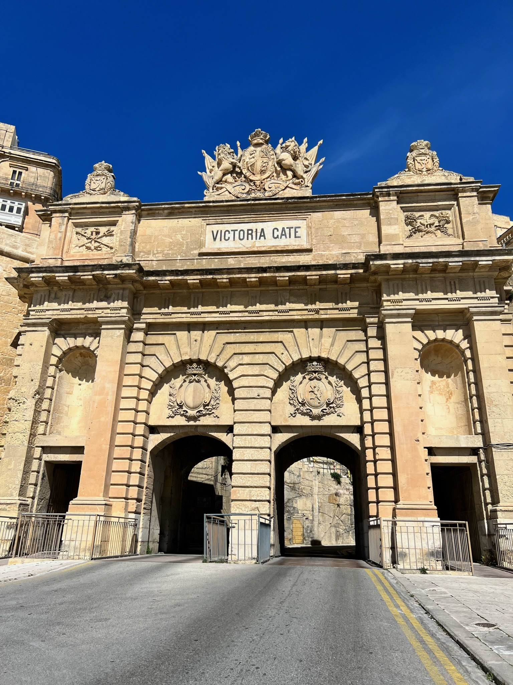

Valletta Grand Harbour, the largest port in Malta

The narrow streets of Valletta, the capital city of Malta

View from Fort St. Angelo

The Knisja Parrokjali tal-Madonna tal-Karmnu church at night

Saint John's Co-Cathedral, Valletta

The statue of Blue the velociraptor found in Upper Barrakka Gardens

Meridiana Wine Estate

Victoria Gate found in the captital city, Valletta
